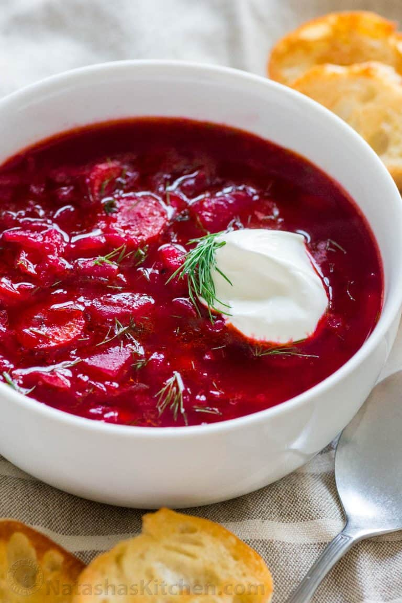

How to cook Borscht

Delicious chunky borscht soup made with fresh beets. Here are the ingredients:
- Sausage: This Ukrainian borscht recipe starts with a pound of pork sausage.
- Vegetables: You’ll need beets, carrots, baking potatoes, cabbage, and an onion.
- Canned tomatoes: Use drained diced tomatoes and canned tomato paste.
- Vegetable oil: Cook the onion in oil.
- Water: You’ll need almost nine cups of water for this big-batch soup.
- Garlic: Three cloves of garlic add bold flavor.
- Sugar: A teaspoon of white sugar lends subtle sweetness.
- Seasonings: Season the borscht with salt and pepper to taste.
- Sour cream: Top the borscht with sour cream.
- Fresh herbs: Garnish the soup with fresh parsley or dill.
Instructions:
It is actually very easy to make and anyone can do it. I like my borsch with variety of vegetables, with thin flavorful broth, lots of fresh garlic and dill. Here is the some basic list of steps:
- Prep veggies: You want to start with cabbage first because it takes the longest time to cook. While it is cooking, you can prep other vegetables.
- Cook cabbage in broth with bay leaves and peppercorns for 20 minutes after bringing to a boil. 3. Chop beets, potatoes, carrots and onion in the meanwhile.
- Saute onion and carrots in a bit of olive oil until translucent, about 5 minutes. 5. This makes onion flavorful making entire borscht recipe more delicious. Do not skip.
- Then add beets and a bit more oil, cook for another 5 minutes. It’s called “zazharka”.
- Transfer sauteed veggies to the pot along with potatoes, tomato paste and salt. Cook covered for 20 minutes. In the meantime, prep garlic, dill and other seasonings.
- Season borscht with white vinegar, garlic, sugar and pepper.
- Stir, turn off heat and let it stand for 10 minutes covered to allow flavors to “marry” each other. Add dill and your borscht is ready to serve.
Enjoy